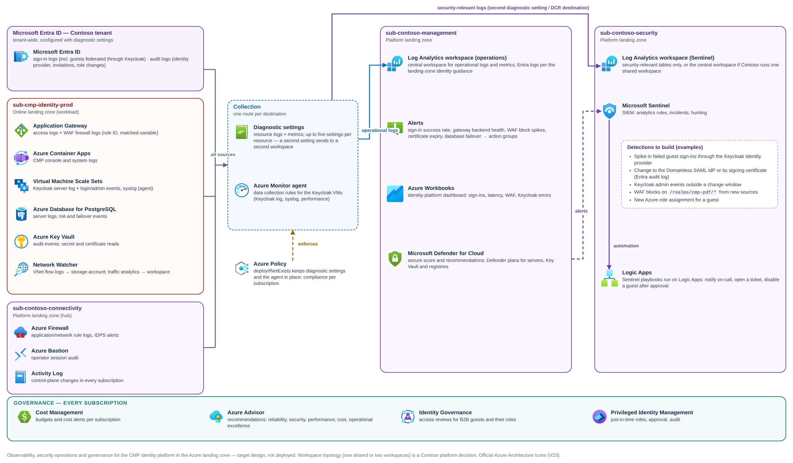

Well-Architected alignment
The landing-zone target design checked against the Azure Well-Architected Framework, pillar by pillar — decision, status and the evidence still needed.
This page checks the target architecture against the five pillars of the Azure Well-Architected Framework. Codes such as SE:05 or RE:03 are the recommendation IDs from each pillar's design-review checklist. Each row states the decision, where it lands, and how much evidence exists.
| Status | Meaning |
|---|---|
| Proven in PoC | Observed in the PoC (screenshot or read-back on this site) |
| Target design | Decided in the target design; not built yet |
| PoC item | Needs a test before anyone can claim it works |
Operations, monitoring and governance#
Most Well-Architected checks below depend on telemetry: you can't prove a reliability target (RE:04), detect an attack (SE:10) or run an incident (OE:08) without it. Figure 1 shows how signals from the tenant, the workload spoke and the hub reach the platform workspaces in the landing zone, and which governance controls apply to every subscription.


| Source | What to collect | How | Why (checklist) |
|---|---|---|---|
| Microsoft Entra ID | SignInLogs, NonInteractiveUserSignInLogs, AuditLogs (Learn: log options) — guest sign-ins through the Keycloak IdP, IdP and invitation changes | Entra diagnostic settings (Learn) | SE:10, RE:10 |
| Application Gateway | ApplicationGatewayAccessLog, ApplicationGatewayFirewallLog (resource-specific tables AGWAccessLogs, AGWFirewallLogs) (Learn); metrics (backend health, latency) | Diagnostic settings | SE:10, RE:10, PE:04 |
| Keycloak VMs | Keycloak server log including login and admin events; syslog; performance counters | Azure Monitor agent with a data collection rule; a custom text log goes to a custom table that must exist before the rule (Learn) PoC item | SE:10, RE:10 |
| Azure Container Apps | CMP console and system logs: ContainerAppConsoleLogs_CL / ContainerAppSystemLogs_CL with the Log Analytics destination (the PoC's setting) (Learn) | Environment logging configuration | OE:07 |
| PostgreSQL flexible server | PostgreSQLLogs (in AzureDiagnostics) (Learn); HA and failover events; metrics | Diagnostic settings; Resource Health | RE:10 |
| Azure Key Vault | AuditEvent (secret and certificate access) (Learn) | Diagnostic settings | SE:09, SE:10 |
| Spoke virtual network | VNet flow logs | Network Watcher writes flow logs to a storage account (Learn); traffic analytics stores processed data in a Log Analytics workspace (Learn) | SE:06 |
| Hub (platform-owned) | Azure Firewall AZFWApplicationRule, AZFWNetworkRule, AZFWIdpsSignature (Learn); Azure Bastion BastionAuditLogs (Learn) | Platform team's diagnostic settings | SE:06, SE:10 |
| Every subscription | Activity log (role assignments, policy, deployments) | Subscription diagnostic settings | SE:10, OE:07 |
Azure landing zone guidance puts the Azure Monitor Logs workspace in the management subscription and the SIEM (Microsoft Sentinel) in the security subscription (Learn: management groups). Some platforms run Sentinel on the single central workspace instead — Sentinel is always added to a Log Analytics workspace (Learn). To send the same logs to two workspaces, use a second diagnostic setting: each resource can have up to five (Learn). Defender for Cloud alerts reach Sentinel through its Defender for Cloud connector, or through Defender XDR when Sentinel is used in the Defender portal (Learn). Confirm Contoso's choice with the platform team before building the analytics rules.
Keycloak writes login and admin events to its server log only when an event listener is configured to do so, at a log level the collector keeps. Validate the event content, the data collection rule and the custom table in non-production before relying on Sentinel detections built on them.
Security#
Checklist: Security design review checklist.
| Code | Recommendation (short) | Decision in this design | Status |
|---|---|---|---|
| SE:01 | Security baseline | ALZ policy baseline inherited; Defender for Cloud posture on both subscriptions (Learn) | Target design |
| SE:02 | Secure development lifecycle | Digest-pinned images and hash-guarded VM bootstrap (PoC); registry scanning; pipeline gates | Proven in PoC Target design |
| SE:03 | Classify data | Keycloak holds personal data (names, emails, credentials) → tag and treat as confidential | Target design |
| SE:04 | Segmentation | Separate subscription; one subnet per tier; NSGs; Keycloak admin never published; CMP admin internal | Target design |
| SE:05 | Identity and access | PIM, MFA for every Azure role holder, Conditional Access for guests, least-privilege managed identities, guest Reader only (Learn) | Proven in PoC Target design |
| SE:06 | Network controls | WAF on all inbound HTTP/S; private endpoints; firewall egress; no VM public IPs | Target design |
| SE:07 | Encryption | TLS end to end (PoC: HTTPS to Keycloak, PostgreSQL TLS verify-full; target adds gateway → Keycloak 8443). SAML responses and assertions signed with RSA-SHA256 — configured in G2, not yet exercised end to end | Proven in PoC Configured in PoC |
| SE:08 | Hardening | Only realm and resources paths published (PoC Caddy rule carried to the gateway); bootstrap admin replaced | Proven in PoC PoC item |
| SE:09 | Secrets | Key Vault references, purge protection, per-secret RBAC (all in the PoC); certificate rotation automated (target) | Proven in PoC Target design |
| SE:10 | Monitoring and threat detection | Microsoft Sentinel in the security subscription over Entra sign-in logs, WAF and firewall logs and Keycloak events (Learn); Defender for Containers scans images in the registry (Learn); see Figure 1 | Target design |
| SE:11 | Testing | Penetration test of the published Keycloak paths; WAF Detection → Prevention with evidence | PoC item |
| SE:12 | Incident response | Runbooks: disable a Keycloak user and remove the guest; remove the Domainless IdP; rotate the realm signing key (G9) | Target design |
Reliability#
Checklist: Reliability design review checklist. The critical user flows (RE:02) are: guest sign-in to the Azure portal through Keycloak and user sign-in to CMP.
| Code | Recommendation (short) | Decision in this design | Status |
|---|---|---|---|
| RE:01 | Simplicity | One realm, one SAML client, Domainless federation (no domain verification dependency) | Configured in PoC |
| RE:03 | Failure mode analysis | See the table below | Target design |
| RE:04 | Targets | Contoso to set an availability target and RTO/RPO for sign-in; measure with synthetic sign-ins | PoC item |
| RE:05 | Redundancy | Zone-redundant gateway and Container Apps (≥ 3 replicas for ingress-exposed apps (Learn)); Keycloak nodes in zones 1–3; PostgreSQL zone-redundant HA (Learn) | Target design |
| RE:06 | Scaling | Gateway autoscale; Container Apps scale rules; scale-set capacity sized from a load test | Target design |
| RE:07 | Self-healing | Gateway health probes remove unhealthy nodes; scale-set instance repair; Container Apps restarts failed replicas | Target design |
| RE:08 | Testing | Fault injection (zone-down, database failover) with Azure Chaos Studio (Learn) | PoC item |
| RE:09 | Disaster recovery | Backups with restore drills; regional DR is a Contoso decision because Indonesia Central has no paired region (Learn) | PoC item |
| RE:10 | Health monitoring | Keycloak health endpoints on the management interface (Keycloak); gateway backend health; sign-in success rate from Entra logs | Target design |
Keycloak's high-availability guide describes single-cluster deployments on Kubernetes or a set of virtual machines with transparent networking, optionally across availability zones, and requires a synchronously replicated database (Keycloak: high availability). PostgreSQL flexible server's zone-redundant HA uses a synchronous standby in another zone (Learn), which matches that requirement. How the nodes discover each other on Azure VMs is not proven yet PoC item.
Failure mode analysis (RE:03)
| Failure | User impact | Detection | Mitigation |
|---|---|---|---|
| One Keycloak node fails | In-flight logins on that node may restart | Gateway backend health; scale-set health | Other nodes serve; instance repair or replace |
| One availability zone fails | Short disruption while traffic shifts | Azure Resource Health; synthetic sign-in | Zone-redundant gateway, Container Apps, scale set and database |
| PostgreSQL HA failover | Keycloak database calls fail during failover; sign-ins error briefly | Database HA events; Keycloak error rate | Automatic failover, typically 60–120 seconds with zero data loss (Learn); confirm Keycloak reconnects cleanly in a failover drill PoC item |
| Realm signing key changed without updating Entra | All guest sign-ins fail signature validation | Entra sign-in logs (federation errors); synthetic guest sign-in | Rollover runbook (G9): publish new key, update Entra, then retire the old key |
| Gateway TLS certificate expires | Browsers refuse the site | Key Vault certificate expiry alert | Auto-renew in Key Vault; the gateway polls Key Vault every four hours for the renewed version (Learn) |
| WAF false positive on SAML parameters | Some guests can't sign in | WAF logs (rule ID, matched variable) | Detection mode first; scoped exclusions PoC item |
| Firewall rule change blocks egress | Updates and image pulls fail; sign-in unaffected if no egress is needed | Firewall logs; pipeline failures | Rule changes through Firewall Policy with review |
| Region outage | Platform unavailable | Azure Service Health | Contoso DR decision (rebuild elsewhere from IaC and backups) |
Cost Optimization#
Checklist: Cost Optimization design review checklist. Prices change and depend on Contoso's agreement, so this page lists cost drivers, not amounts — estimate with the Azure pricing calculator.
| Code | Recommendation (short) | Decision in this design | Status |
|---|---|---|---|
| CO:01 | Accountability | Tags for owner and cost centre on every resource; shared hub costs charged back by the platform team | Target design |
| CO:02 | Cost model | Model prod and non-prod separately; include gateway, scale set, PostgreSQL HA, Premium registry, logs | Target design |
| CO:04 | Guardrails | Budgets and alerts per subscription (Learn); the PoC's costcontrol tag is metadata only | Target design |
| CO:05 | Best rates | Reservations or savings plans for steady Keycloak VMs and the database after a month of usage data | Target design |
| CO:08 | Environment costs | Non-prod: no zone-redundant HA, single Keycloak node, smaller gateway capacity | Target design |
| CO:10 | Data costs | Log retention and table plans set deliberately; don't ingest debug logs from Keycloak in production | Target design |
| CO:14 | Consolidation | Reuse the platform's firewall, Bastion, DDoS plan and Sentinel instead of per-workload copies | Target design |
| Main cost driver | Why it exists | Lever |
|---|---|---|
| Application Gateway WAF v2 | Internet entry + WAF | Autoscale minimum instances; one gateway for both host names |
| Keycloak scale set (≥ 2 nodes) | Availability across zones | Right-size from load test; reservations |
| PostgreSQL zone-redundant HA | A standby server runs in a second zone | HA only in production; price both servers in the calculator |
| Container Registry Premium | Required for private endpoints | Share one registry across environments only if Contoso's segmentation rules allow it |
| Log Analytics / Sentinel ingestion | Security monitoring | Filter noisy categories; set retention per table |
Operational Excellence#
Checklist: Operational Excellence design review checklist.
| Code | Recommendation (short) | Decision in this design | Status |
|---|---|---|---|
| OE:02 | Standardization | Contoso naming and tagging; one template set for both environments | Target design |
| OE:05 | Infrastructure as code | Bicep modules derived from the PoC templates; what-if on every change | Proven in PoC Target design |
| OE:06 | Supply chain / pipelines | Pipelines with workload identity federation (Learn); self-hosted agents for the private registry; images by digest | Target design |
| OE:07 | Monitoring | Workbooks for sign-in success, gateway health, WAF blocks, Keycloak metrics | Target design |
| OE:08 | Incident management | Runbooks on this site (G8 troubleshooting, G9 operations) become the on-call playbook; the key rollover is not rehearsed yet (B5) | Target design |
| OE:10 | Automation | Update Manager for VM patching (Learn); certificate auto-renewal; guest lifecycle automation | Target design |
| OE:11 | Safe deployment | Non-prod first; rolling upgrade of Keycloak nodes one zone at a time; database migrations tested on a restore copy | PoC item |
Keycloak upgrades can change the database schema. A rolling upgrade across nodes is only safe when the versions involved support it — test each upgrade on a restored copy of the production database in non-prod before touching production.
Performance Efficiency#
Checklist: Performance Efficiency design review checklist.
| Code | Recommendation (short) | Decision in this design | Status |
|---|---|---|---|
| PE:01 | Targets | Contoso sets p95 sign-in latency and peak sign-ins per minute (for example, start of the working day) | PoC item |
| PE:02 | Capacity planning | Start from Keycloak's sizing guide — for example, one vCPU for each 15 password-based logins per second (Keycloak: CPU and memory sizing) — then validate with a load test | PoC item |
| PE:05 | Scaling and partitioning | Horizontal: more Keycloak nodes; gateway autoscale; Container Apps replicas | Target design |
| PE:06 | Performance testing | Azure Load Testing against the full OIDC and SAML flows (Learn) | PoC item |
| PE:08 | Data performance | Database SKU and connection pool sized from the load test; monitor connection count | PoC item |
| PE:09 | Critical flows | Prioritise the guest sign-in path; keep CMP catalog calls off the sign-in path | Target design |
Trade-offs#
| Decision | Gains | Costs | Why accepted |
|---|---|---|---|
| Zone-redundant data tier | Survives a zone failure (Reliability) | A second database server in another zone (Cost) | Sign-in is a tier-0 dependency for Azure access |
| WAF in Prevention mode | Blocks attacks on public realm paths (Security) | Risk of false positives on SAML parameters (Reliability) | Accepted after Detection-mode evidence |
| Egress through Azure Firewall | Inspected, allow-listed outbound (Security) | Shared firewall dependency; rule-change process (Operational Excellence) | Platform standard in the landing zone |
| Online placement | Workload team controls ingress tuning (Operational Excellence) | A public IP in a workload subscription (Security governance) | Matches the Online intent; revisit if Contoso centralises ingress |
| Keycloak on VMs, not Kubernetes | Smallest change from the proven PoC (Simplicity) | Clustering on VMs needs validation | Avoids adding AKS to the platform only for Keycloak |
Evidence still required#
These items extend the PoC backlog (B9–B14). None of them blocks a non-production build; all of them block a production claim.
| # | Item | Exit criterion |
|---|---|---|
| B9 | Keycloak cluster on a Flexible scale set across zones | Node loss and zone-down tests keep sign-in working; discovery method documented |
| B10 | Application Gateway WAF with SAML and OIDC traffic | G8 T4–T6 pass in Prevention mode; exclusions documented with rule IDs |
| B11 | Back-channel resolution of the issuer host (⑤) | CMP token and JWKS calls succeed through the private path with the public issuer |
| B12 | Landing-zone policy compliance | Non-prod deployment compliant with no exemptions beyond the documented one(s) |
| B13 | Load test | p95 sign-in latency and throughput meet Contoso's target |
| B14 | Backup restore and DR decision | Database restore drill within RTO/RPO; regional DR approach approved |